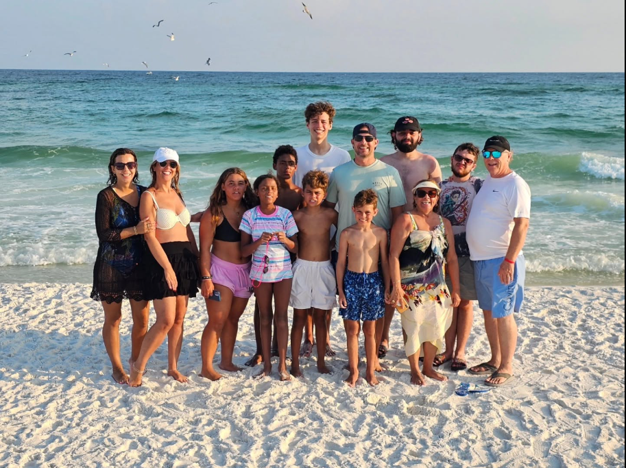
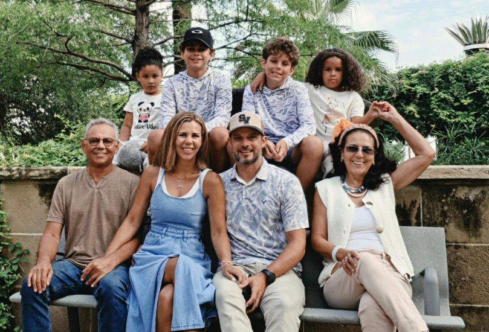

Seaspray Owners First
Meet Eric
I'm running for the Seaspray Board because my family cares deeply about Seaspray, its owners, and its future. This is a special place, and I want to help protect what makes it so meaningful for generations to come.

and friends together.
A Connection to Seaspray That Spans Generations
Like many owners our family connection to Seaspray spans generations. My wife Cindy has been visiting Seaspray with her family since she was a teenager. Those amazing trips as a family ultimately led her stepdad Leroy to purchase a one bedroom condo. It was in the rental program but primarily served as a family vacation home. Once my wife and I had kids of our own we continued the tradition and started bringing our boys to Seaspray, and last year we made the decision to sell the 1 bedroom and purchase a 2 bedroom across the courtyard.


More Than a Beach Vacation
Our favorite memories at Seaspray obviously include time on the beach, but also gathering at the community grill area after a long day for a BBQ with friends and family as the sun sets over the beach and boardwalk. But if you ask me what truly sets Seaspray apart and what I enjoy the most, it's watching our kids meet new friends and then playing for hours together in the grass courtyard and pool, that's something you don't get at the bigger beach condos.
Our Family Today
We share our two bedroom condo with my in-laws Leroy and Pat, who recently purchased a home just down the road and now officially call Fort Walton their year-round home. Cindy and I live just north of San Antonio in the beautiful Texas Hill Country with our two sons and 4 dogs. Even though it is a 12 hour drive for us, Seaspray has always been a family retreat that is well worth the drive.


Service Is a Priority
Despite our busy careers paired with busy school and sports schedules, Cindy and I value giving back and volunteering. We are active in our church, HOA, PTA, and a local school advisory committee.
I also go on a mission trip to Agua Prieta Mexico twice a year to help build homes for families in need.
I chose to run for the Seaspray Board because owners deserve stronger communication, more transparency, more accountability, and a positive path forward. I want to bring the same community-minded, servant-leadership approach to Seaspray that we try to practice in every area of our lives.
Leadership and Professional Experience
I have spent most of my adult life as a business owner building homes which provides me with a wealth of experience in budgeting, project management, operations, vendor coordination, team and people management, and homeowner relations. I also served as a combat engineer in the Army and hold a bachelor's in business along with an MBA.

- Executive Leadership
- People and Change Management
- Budgeting
- Operations
- Communication
I Would Be Honored to Serve Seaspray Owners
I want to help protect what makes Seaspray special while making practical improvements for all owners. Together, we can build on our strong community and ensure a bright future for Seaspray.